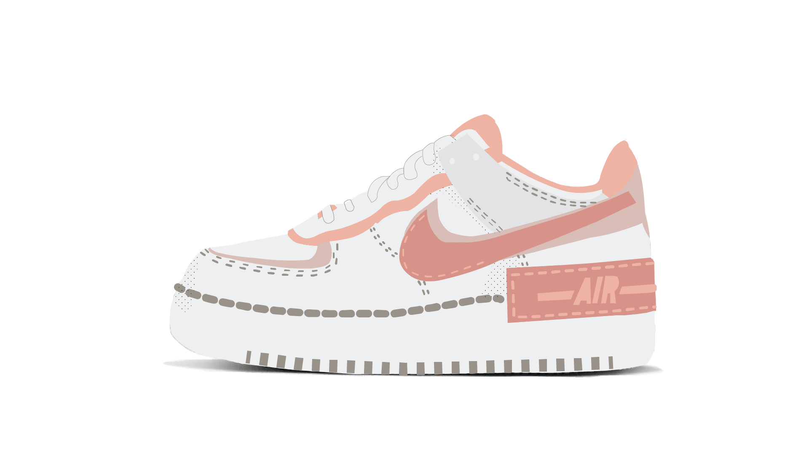

Nike

Nike en 6 couleurs
J'ai réalisé cette illustration lors de mon premier cours d'infographie. Le but était de décalquer et de réaliser un objet en utilisant que 6 couleurs. J'ai alors choisi la Air Force Shadow en rose car j'aime bien l'univers streetwear. De plus, cette paire de sneakers est très tendence car elle reprend la forme mythique de Nike la "Air force one".